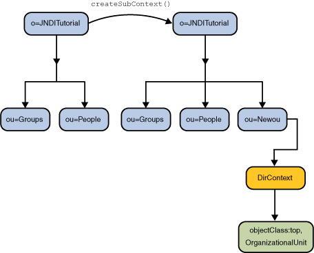

La interfaz de Context contiene métodos para crear y
destruir un subcontexto, un contexto que está vinculado a otro contexto del
mismo tipo.
El ejemplo descrito aquí usa un objeto que tiene atributos y crea un subcontexto en el directorio.
Puede usar estos métodos de DirContext para asociar atributos con el objeto en el momento que la
vinculación o el subcontexto se agrega al espacio de nombres. Por ejemplo, podría crear un objeto
Person y vincularlo al espacio de nombres y al mismo tiempo asociar atributos sobre ese objeto
Person. El equivalente de nombrado no tendrá atributos.
El método createSubcontext() difiere de bind() en que crea un Objeto nuevo p.e un nuevo Contexto a ser vinculado al directorio mientras que bind() vincula el Objeto dado en el directorio.
Para crear un contexto de nombrado, proporciona a
createSubcontext() el nombre del contexto que quiere crear. Para crear un contexto que
tiene atributos, proporciona a
DirContext.createSubcontext() el nombre del contexto que quiere crear y sus atributos.
Antes de continuar: Los ejemplos en esta lección requieren que haga adiciones al esquema. Debe
deshabilitar la comprobación de esquemas en el servidor LDAP o agregar
el esquema que acompaña este tutorial al servidor. Ambas tareas son típicamente realizadas
por el administrador del servidor de directorio. Vea la lección
Configuración LDAP.
// Create attributes to be associated with the new context
Attributes attrs = new BasicAttributes(true); // case-ignore
Attribute objclass = new BasicAttribute("objectclass");
objclass.add("top");
objclass.add("organizationalUnit");
attrs.put(objclass);
// Create the context
Context result = ctx.createSubcontext("NewOu", attrs);
Este ejemplo crea un nuevo contexto llamado "ou=NewOu" que tiene un
atributo "objectclass" con dos valores, "top" y
"organizationalUnit", en el contexto ctx.
# java Create
ou=Groups: javax.naming.directory.DirContext
ou=People: javax.naming.directory.DirContext
ou=NewOu: javax.naming.directory.DirContext
Este ejemplo crea un nuevo contexto, llamado "NewOu", que es un
hijo de ctx.

Para destruir un contexto, proporcione a
destroySubcontext() el nombre del contexto a destruir.
// Destroy the context
ctx.destroySubcontext("NewOu");
Este ejemplo destruye el contexto "NewOu" en el contexto
ctx.